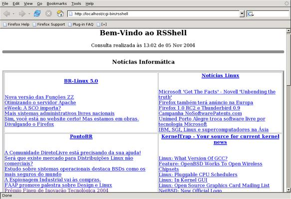
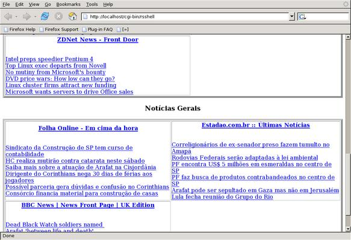

Bem-vindo(a) à página do programa RSShell.
Muitas pessoas acessam alguns sites todos os dias a procura de notícias interessantes. Entretanto, perde-se muito tempo e gasta-se conexão acessando cada um destes sites no browser. Esperar carregar todas as imagens, banners, flash, java etc, só para ver se hoje tem alguma notícia legal. Este é o ponto do RSShell, que tem como objetivo poupar tempo e conexão.
O RSShell acessa os sites pré-configurados, utilizando um browser modo texto chamado lynx, coleta as notícias e monta uma página com todos os sites e suas respectivas manchetes com links para cada uma delas. A que lhe interessar é só clicar em cima que a página referente a esta notícia é carregada. Utilizando o lynx somente o texto da página é acessado, desta maneira não é realizado o download destes sites bloated. RSShell foi todo escrito em Shell Script (BASH).
O RSShell foi feito de maneira genérica, ou seja, funciona para qualquer site que tenha suporte a RSS. Sites que não tem este suporte não funcionam. Não sabe o que é RSS? Acesse: RSS no Wikipedia
A lista com os sites a serem acessados está no final do código fonte do programa. Pode-se customizá-los adicionando ou removendo as URLs dos arquivos RSS dos sites. É necessário deixar uma URL por linha.
Também existe a opção de criar seções. Adicione-as no final do código fonte. Ao contrário das URLs, as seções tem que começar pelo sinal de menos.
Dê uma olhada no código que ficará mais claro. É bem simples de costumizar para os seus sites favoritos.
Existem duas maneiras de utilizar o RSShell:
Normalmente acessa-se sites de notícias algumas vezes por dia. Se você acessa uma vez por dia, por exemplo, às 9h da manhã, você pode colocar o programa para rodar todos os dias às 8:50h no cron de sua máquina. Assim, quando acessar às 9h terá as últimas notícias.
Se for várias vezes por dia, pode colocar no cron para rodar uma vez a cada uma hora, duas horas.... É só escolher.
Outra alternativa é executar o programa direto na linha de comando quando for necessário. Quer ler?! É só rodar.
OBS: O RSShell gera a página HTML na saída padrão (stdout). Caso seja utilizado cron ou a linha de comando, sua saída deve ser redirecionada para um arquivo para posteriormente ser acessado através de algum browser.
prompt> ./rsshell > rsshell.html
O RSShell também pode ser utilizado como um script CGI. Não sabe o que é CGI? Acesse http://thobias.org/doc/cgi_shell.html
Nesta opção é necessário colocar o programa em algum servidor web. Quando for acessada esta URL, o RSShell busca as notícias dos sites e monta a página de forma dinâmica.
http://localhost/cgi-bin/rsshell
A página HTML gerada pelo RSShell é bem simples. Para personalizar você deve utilizar a opção '--css' e informar um arquivo CSS. Exemplo:
prompt> ./rsshell --css arquivo.css > pagina.html
Utilizando CSS você pode deixar a página do seu gosto. As notícias estão em tabelas HTML. Para facilitar a customização as seguintes TAGs HTML foram utilizadas.
| h1 | Título da página |
| h2 | Nome da seção (ex: Notícias Informática) |
| h3 | Nome do site (ex: BR-Linux 5.0) |
Como uma imagem vale mais do que mil palavras, alguns exemplos de uso do RSShell em ação.


Link para baixar o programa: RSShell
OBS: Após baixar não esqueça de dar permissão de execução para o arquivo.
prompt> chmod +x rsshell
Gostou?! Achou algum bug?! Tem algum comentário?! Me envie um mail: thobias [at ] thobias.org
Divirta-se!!!